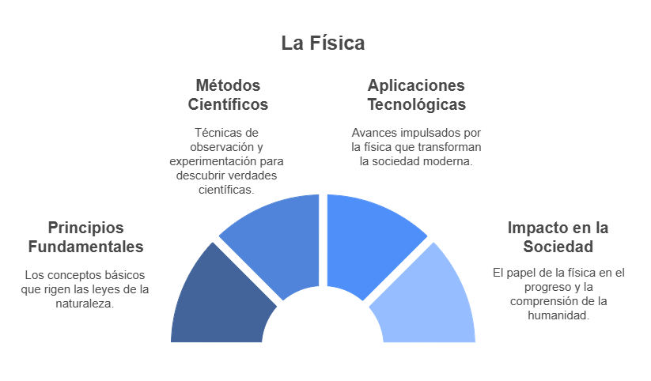
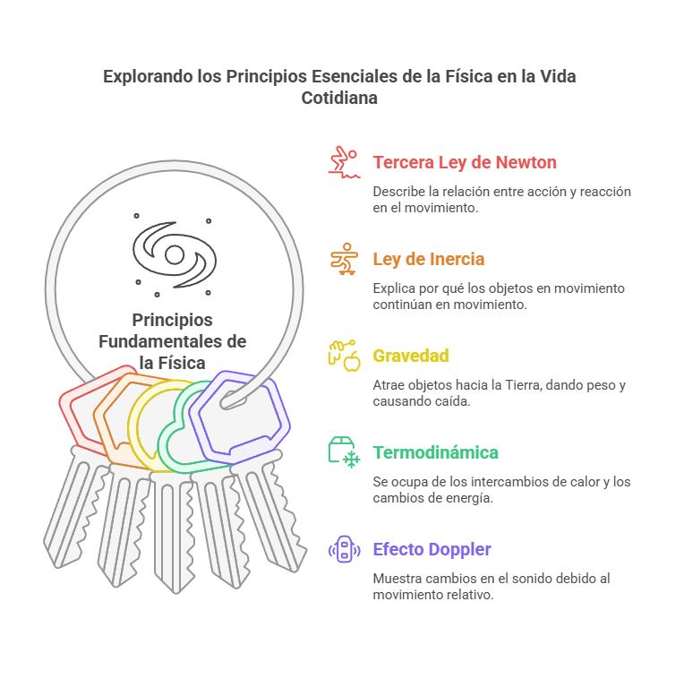
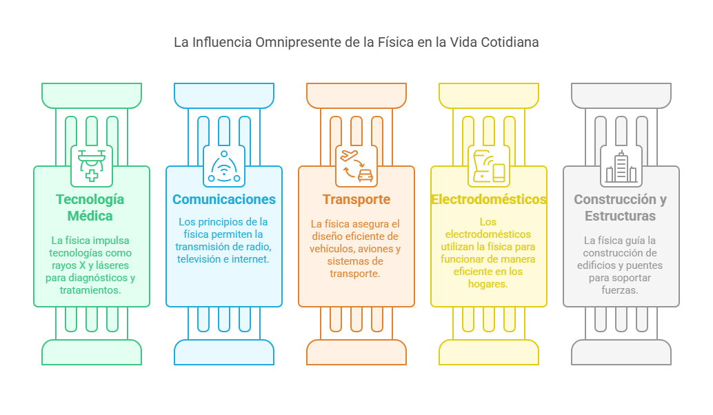
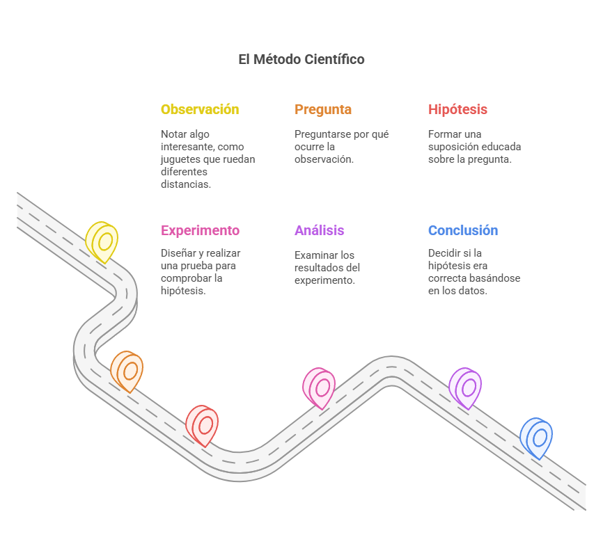

¿Qué es y por qué es importante?
La palabra "física" viene del griego "fisis", que significa "naturaleza". La física es la ciencia que estudia cómo funciona el universo, analizando la energía, la materia, el tiempo y el espacio. Antes del siglo XVII, no existía como una ciencia separada; era parte de la "Filosofía Natural", junto con la química, la biología y las matemáticas. Fue en la Revolución Científica cuando la física se convirtió en una disciplina independiente, separándose de la química y otras ciencias.
Hoy en día, la física se define como la ciencia que estudia las interacciones entre la materia, la energía, el espacio y el tiempo. La Real Academia Española la describe como la "ciencia que estudia las propiedades de la materia y la energía", pero esta definición es un poco limitada. En realidad, la física busca explicar los principios más básicos de la naturaleza con precisión y rigor matemático.
Para entender mejor, imagina la física como un libro de instrucciones del universo. La mecánica es como aprender a andar en bicicleta: necesitas conocer las fuerzas que te mantienen en equilibrio. La termodinámica es como aprender por qué se enfría tu café. La óptica te explica por qué vemos colores, y el electromagnetismo nos dice cómo funcionan los imanes o cómo llega la señal de tu teléfono.
La física es fundamental para la ciencia y la tecnología. Sin ella, no existirían computadoras, celulares, televisores o internet. También ha permitido avances en medicina, como los rayos X y la resonancia magnética. La física está en el diseño de autos, aviones y barcos, así como en la generación de energía eléctrica y el aprovechamiento de la energía solar y eólica. Las telecomunicaciones dependen de ondas electromagnéticas, y los ingenieros usan la física para resolver problemas del mundo real.
La física no solo mejora la tecnología, también nos ayuda a entender el mundo. Nos permite descubrir desde los secretos del átomo hasta el origen del universo. Es una ciencia que despierta la curiosidad y fomenta el pensamiento lógico, habilidades clave en la vida diaria y en el desarrollo profesional. En definitiva, la física es una herramienta poderosa que ha cambiado el mundo y seguirá haciéndolo en el futuro.
La física en la vida cotidiana
p>La física no es solo algo que estudian los científicos en laboratorios; ¡está ocurriendo a tu alrededor todo el tiempo!Los principios fundamentales de la física están presentes en todas las cosas que suceden a nuestro alrededor, y nos ayudan a entender cómo funcionan muchas de las cosas que vemos y experimentamos. Por ejemplo, la tercera ley de Newton nos dice que "a toda acción corresponde una reacción igual y opuesta". Esto significa que cuando empujas algo, como a una persona en una piscina, tu cuerpo también se mueve hacia atrás. Lo mismo sucede cuando saltas: empujas el suelo hacia abajo, y el suelo te empuja hacia arriba. Es como cuando te impulsas en un trampolín: mientras empujas el trampolín hacia abajo, este te lanza hacia arriba.
La primera ley de Newton, o la ley de la inercia, nos explica por qué una pelota sigue rodando hasta que algo la detiene. Imagina que vas en patineta, si no chocas con algo, vas a seguir moviéndote hasta que la fricción o el viento te frenen. La gravedad es la fuerza que hace que todos los objetos tengan peso, y es la razón por la que cuando lanzas algo hacia arriba, como una pelota, esta se desacelera y luego cae. Lo mismo pasa con un huevo: si lo dejas caer, la gravedad lo hace descender, y si no tiene nada que lo frene, se rompe.
El segundo principio de la termodinámica se aplica a los refrigeradores, que usan electricidad para sacar el calor de los alimentos y mantenerlos fríos. De manera parecida, si en invierno tienes una bebida fría afuera, se calienta porque el calor pasa de un lugar más caliente a un lugar más frío. El principio de Arquímedes explica por qué los objetos en el agua parecen más livianos. Cuando metes un objeto en el agua, el agua empuja hacia arriba al objeto, ayudando a que flote. Este principio es el que hace que los barcos floten en el mar. La presión atmosférica también afecta cosas como el punto de ebullición del agua. Cuando estás en una altitud más alta, como en una montaña, el agua hierve a una temperatura más baja, lo que puede hacer que las comidas tarden más en cocinarse. Finalmente, el efecto Doppler explica por qué el sonido de una ambulancia cambia cuando pasa cerca de ti y luego se aleja. Cuando la ambulancia se acerca, el sonido de su sirena suena más agudo, pero cuando se aleja, se vuelve más grave. Esto sucede porque las ondas sonoras se comprimen o estiran dependiendo del movimiento de la fuente de sonido.
La Física también está presente en la tecnología que usamos todos los días, aunque muchas veces no la notamos. Por ejemplo, los rayos X que se usan en los hospitales o los lásers en cirugías están basados en principios de la física. Los teléfonos, televisores y casi todos los dispositivos electrónicos funcionan gracias a la física. Los aviones pueden volar, los autos se mueven y los edificios se mantienen firmes porque la física lo permite. El electromagnetismo es la base de muchos dispositivos eléctricos, como los hornos microondas, ventiladores y timbres. Incluso el sistema GPS que usamos en los coches depende de la teoría de la relatividad para funcionar correctamente. Los lásers, que usan luz para hacer cosas como cortar materiales o realizar cirugías, también son un ejemplo de cómo los principios de la física se aplican en la vida diaria. La física nuclear, que estudia cómo funcionan los átomos, nos ha dado descubrimientos importantes en áreas como la energía nuclear, la medicina nuclear y la agricultura. La aerodinámica, que estudia cómo se mueven los fluidos como el aire, es clave para el diseño de aviones, cohetes, coches y puentes que pueden resistir vientos fuertes. La teoría de la relatividad, aunque suena complicada, ha sido importante para el desarrollo de la tecnología que permite que los GPS en los coches funcionen correctamente.
La física está en todos lados, desde el transporte hasta la comunicación. En el diseño de los motores de los autos y aviones, se aplica la termodinámica para aprovechar la energía, la mecánica para entender cómo se mueve el vehículo y la aerodinámica para reducir la resistencia del aire. Las tecnologías de comunicación, como la radio, televisión e internet, funcionan gracias al electromagnetismo, que estudia las ondas de energía. La fibra óptica, que se usa para transmitir internet a alta velocidad, también se basa en principios de la luz. En la medicina, los rayos X, las resonancias magnéticas, los escáneres PET y los ultrasonidos permiten hacer diagnósticos de manera no invasiva y se basan en diferentes principios físicos. La cirugía láser y la radioterapia, que se usan para tratar enfermedades como el cáncer, también aplican conceptos de la física. En casa, usamos electrodomésticos como los refrigeradores, microondas y luces, todos basados en principios físicos. La construcción de nuestros hogares y edificios también se asegura mediante la aplicación de la física, utilizando materiales adecuados para resistir las fuerzas que actúan sobre ellos. En los deportes, las leyes de la física nos ayudan a entender cómo se mueve una pelota, cómo el viento afecta al casco de un ciclista o cómo las fuerzas actúan cuando nadas. La física no solo está en los grandes descubrimientos, sino también en las cosas más simples y cotidianas que
Método científico aplicado a la física
¿Alguna vez te has preguntado cómo los científicos descubren cosas sobre la física? Utilizan un proceso especial llamado método científico, que es como una guía paso a paso para resolver misterios sobre el mundo, ¡igual que un detective! Imagina que ves una huella extraña en el jardín. El método científico es como seguir pistas para descubrir qué animal la hizo.
El método científico es un proceso sistemático y riguroso que guía a los investigadores en el descubrimiento y comprensión de los fenómenos naturales y los procesos complejos. Este enfoque se compone de varias etapas ordenadas: observación, formulación de una pregunta o definición del problema, formulación de una hipótesis, experimentación, análisis de los datos y elaboración de conclusiones. Además, incluye un paso de retroalimentación que permite revisar las hipótesis con base en los resultados obtenidos. Las características clave del método científico son la objetividad (evitar sesgos personales), la reproducibilidad (los experimentos pueden repetirse para verificar los resultados), la verificabilidad (los hallazgos se apoyan en evidencia empírica) y la falsabilidad (las hipótesis pueden demostrarse incorrectas mediante pruebas). Este método busca minimizar la influencia de la subjetividad del investigador, lo que refuerza la validez de los resultados y el conocimiento adquirido. Aunque los pasos generales son los mismos, la aplicación del método puede variar según la disciplina científica o área de investigación. Por ejemplo, en la física teórica, la experimentación no siempre es factible.
En el ámbito de la física, el método científico comienza con la observación de fenómenos naturales o patrones que despiertan el interés científico. A partir de estas observaciones, se plantea una pregunta o problema específico que sea comprobable. Luego, se formula una hipótesis, una explicación tentativa que puede responder a la pregunta, basándose en el conocimiento existente y el razonamiento lógico. Posteriormente, se diseñan y realizan experimentos controlados para obtener datos que validen o refuten la hipótesis. Es crucial seguir protocolos rigurosos y registrar los resultados con precisión. Los datos obtenidos se analizan utilizando herramientas estadísticas y metodologías específicas para determinar si respaldan la hipótesis inicial. Finalmente, se elaboran conclusiones basadas en los resultados, evaluando si la hipótesis fue confirmada o refutada. Además, se discuten las implicaciones de los hallazgos y se sugieren posibles áreas para futuras investigaciones.
La observación es el primer paso crucial en el proceso de investigación científica, y nos lleva a formular preguntas sobre el mundo natural. Una hipótesis bien formulada ofrece una explicación comprobable que orienta el diseño de experimentos en física. La experimentación es esencial para obtener datos empíricos que prueben las hipótesis y ayuden a entender las relaciones entre variables físicas. El análisis de los datos experimentales nos permite interpretar los resultados y determinar si nuestras hipótesis son válidas, refinando nuestras teorías existentes o desarrollando nuevas. La naturaleza iterativa del método científico, con sus ciclos de retroalimentación, permite una mejora continua de nuestra comprensión del mundo físico.
El método científico puede explicarse de forma sencilla como si fuéramos detectives resolviendo un misterio. Los pasos serían:
Experimentos sencillos para practicar el método científico
- 🔵 El misterio de la pelota que rebota
- Observación: Las pelotas rebotan
- Pregunta: ¿La altura desde la que cae una pelota afecta la altura a la que rebota?
- Hipótesis: Si dejo caer la pelota desde más alto, rebotará más alto.
- Experimento: Deja caer la misma pelota desde diferentes alturas y mide la altura de cada rebote.
- Análisis: Compara las alturas de los rebotes.
- Conclusión: ¿Tu hipótesis fue correcta?
- 🚗 La carrera rodante
- Observación: Los coches de juguete ruedan por las rampas.
- Pregunta: ¿Añadir peso a un coche de juguete lo hace rodar más rápido?
- Hipótesis: Si añado peso al coche, rodará más rápido.
- Experimento: Cronometra cuánto tarda un coche normal y otro con peso extra en rodar por la misma rampa.
- Análisis: Compara los tiempos.
- Conclusión: ¿El coche pesado realmente fue más rápido?
El método científico no solo se usa en la física, sino en muchas áreas de la vida. Nos ayuda a tomar decisiones basadas en pruebas, a pensar de forma lógica y a resolver problemas de manera organizada.
Incluso si una hipótesis no es correcta, sigue siendo un paso importante en la ciencia. A veces, un resultado inesperado nos lleva a hacer nuevas preguntas y descubrir cosas aún más interesantes. ¡Así es como avanza el conocimiento!
Unidades de medida y Conversión de unidades
Una magnitud física es cualquier cosa que podamos medir, como la longitud, el peso o el tiempo. Estas magnitudes se dividen en dos tipos: fundamentales y derivadas. Las fundamentales son aquellas que no dependen de otras magnitudes para ser definidas. Por ejemplo, el metro mide la longitud, el kilogramo mide la masa, y el segundo mide el tiempo. Son las bases para medir cualquier otra cosa.
Por otro lado, las magnitudes derivadas se obtienen combinando las magnitudes fundamentales. Por ejemplo, la velocidad se calcula dividiendo la longitud entre el tiempo (como decir cuántos metros recorres por segundo).
El Sistema Internacional de Unidades (SI) es un conjunto de reglas para medir todas estas magnitudes, usando las unidades fundamentales como el metro y el kilogramo. Este sistema ayuda a que los científicos de todo el mundo puedan entenderse entre sí, ya que todos usan las mismas unidades.
Por ejemplo, si un científico de Japón dice que midió algo en metros, alguien de México sabe exactamente a qué se refiere. El SI también tiene prefijos como "kilo-" (1000) o "centi-" (0.01) que ayudan a hacer las medidas más grandes o más pequeñas sin cambiar de unidad.
A veces, necesitamos convertir una medida a otra. Por ejemplo, si tienes 8 metros y quieres saber cuántos centímetros son, multiplicas 8 por 100 (porque un metro tiene 100 centímetros), y así obtienes 800 centímetros. De igual forma, si necesitas convertir entre kilogramos y libras, usarías un factor de conversión, como multiplicar por 2.2.
Las unidades estandarizadas son esenciales para que todos comprendan lo mismo cuando se habla de medidas. Sin ellas, sería muy difícil comparar los resultados de experimentos o entender avances tecnológicos de otros países.
Unidades Fundamentales del SI
| Magnitud | Unidad Base SI | Símbolo | Definición |
|---|---|---|---|
| Longitud | metro | m | Distancia recorrida por la luz en el vacío en 1/299,792,458 de segundo |
| Masa | kilogramo | kg | Definido en términos de la constante de Planck |
| Tiempo | segundo | s | Duración de 9,192,631,770 períodos de la radiación del cesio-133 |
Unidades Derivadas Comunes del SI
| Magnitud | Unidad SI Derivada | Símbolo | Expresión en Unidades Base SI |
|---|---|---|---|
| Área | metro cuadrado | m² | m × m |
| Volumen | metro cúbico | m³ | m × m × m |
Factores de Conversión Comunes
| Unidad | Factor de Conversión | Otra Unidad |
|---|---|---|
| 1 metro (m) | 100 | centímetros (cm) |
| 1 kilogramo (kg) | 1000 | gramos (g) |
¿Qué es y por qué es importante?
La palabra "física" viene del griego "fisis", que significa "naturaleza". La física es la ciencia que estudia cómo funciona el universo, analizando la energía, la materia, el tiempo y el espacio. Antes del siglo XVII, no existía como una ciencia separada; era parte de la "Filosofía Natural", junto con la química, la biología y las matemáticas. Fue en la Revolución Científica cuando la física se convirtió en una disciplina independiente, separándose de la química y otras ciencias.
Hoy en día, la física se define como la ciencia que estudia las interacciones entre la materia, la energía, el espacio y el tiempo. La Real Academia Española la describe como la "ciencia que estudia las propiedades de la materia y la energía", pero esta definición es un poco limitada. En realidad, la física busca explicar los principios más básicos de la naturaleza con precisión y rigor matemático.
Para entender mejor, imagina la física como un libro de instrucciones del universo. La mecánica es como aprender a andar en bicicleta: necesitas conocer las fuerzas que te mantienen en equilibrio. La termodinámica es como aprender por qué se enfría tu café. La óptica te explica por qué vemos colores, y el electromagnetismo nos dice cómo funcionan los imanes o cómo llega la señal de tu teléfono.
La física es fundamental para la ciencia y la tecnología. Sin ella, no existirían computadoras, celulares, televisores o internet. También ha permitido avances en medicina, como los rayos X y la resonancia magnética. La física está en el diseño de autos, aviones y barcos, así como en la generación de energía eléctrica y el aprovechamiento de la energía solar y eólica. Las telecomunicaciones dependen de ondas electromagnéticas, y los ingenieros usan la física para resolver problemas del mundo real.
La física no solo mejora la tecnología, también nos ayuda a entender el mundo. Nos permite descubrir desde los secretos del átomo hasta el origen del universo. Es una ciencia que despierta la curiosidad y fomenta el pensamiento lógico, habilidades clave en la vida diaria y en el desarrollo profesional. En definitiva, la física es una herramienta poderosa que ha cambiado el mundo y seguirá haciéndolo en el futuro.
La física en la vida cotidiana
La física no es solo algo que estudian los científicos en laboratorios; ¡está ocurriendo a tu alrededor todo el tiempo!
Los principios fundamentales de la física están presentes en todas las cosas que suceden a nuestro alrededor, y nos ayudan a entender cómo funcionan muchas de las cosas que vemos y experimentamos. Por ejemplo, la tercera ley de Newton nos dice que "a toda acción corresponde una reacción igual y opuesta". Esto significa que cuando empujas algo, como a una persona en una piscina, tu cuerpo también se mueve hacia atrás. Lo mismo sucede cuando saltas: empujas el suelo hacia abajo, y el suelo te empuja hacia arriba. Es como cuando te impulsas en un trampolín: mientras empujas el trampolín hacia abajo, este te lanza hacia arriba.
La primera ley de Newton, o la ley de la inercia, nos explica por qué una pelota sigue rodando hasta que algo la detiene. Imagina que vas en patineta, si no chocas con algo, vas a seguir moviéndote hasta que la fricción o el viento te frenen. La gravedad es la fuerza que hace que todos los objetos tengan peso, y es la razón por la que cuando lanzas algo hacia arriba, como una pelota, esta se desacelera y luego cae. Lo mismo pasa con un huevo: si lo dejas caer, la gravedad lo hace descender, y si no tiene nada que lo frene, se rompe.
El segundo principio de la termodinámica se aplica a los refrigeradores, que usan electricidad para sacar el calor de los alimentos y mantenerlos fríos. De manera parecida, si en invierno tienes una bebida fría afuera, se calienta porque el calor pasa de un lugar más caliente a un lugar más frío. El principio de Arquímedes explica por qué los objetos en el agua parecen más livianos. Cuando metes un objeto en el agua, el agua empuja hacia arriba al objeto, ayudando a que flote. Este principio es el que hace que los barcos floten en el mar. La presión atmosférica también afecta cosas como el punto de ebullición del agua. Cuando estás en una altitud más alta, como en una montaña, el agua hierve a una temperatura más baja, lo que puede hacer que las comidas tarden más en cocinarse. Finalmente, el efecto Doppler explica por qué el sonido de una ambulancia cambia cuando pasa cerca de ti y luego se aleja. Cuando la ambulancia se acerca, el sonido de su sirena suena más agudo, pero cuando se aleja, se vuelve más grave. Esto sucede porque las ondas sonoras se comprimen o estiran dependiendo del movimiento de la fuente de sonido.
La Física también está presente en la tecnología que usamos todos los días, aunque muchas veces no la notamos. Por ejemplo, los rayos X que se usan en los hospitales o los lásers en cirugías están basados en principios de la física. Los teléfonos, televisores y casi todos los dispositivos electrónicos funcionan gracias a la física. Los aviones pueden volar, los autos se mueven y los edificios se mantienen firmes porque la física lo permite. El electromagnetismo es la base de muchos dispositivos eléctricos, como los hornos microondas, ventiladores y timbres. Incluso el sistema GPS que usamos en los coches depende de la teoría de la relatividad para funcionar correctamente. Los lásers, que usan luz para hacer cosas como cortar materiales o realizar cirugías, también son un ejemplo de cómo los principios de la física se aplican en la vida diaria. La física nuclear, que estudia cómo funcionan los átomos, nos ha dado descubrimientos importantes en áreas como la energía nuclear, la medicina nuclear y la agricultura. La aerodinámica, que estudia cómo se mueven los fluidos como el aire, es clave para el diseño de aviones, cohetes, coches y puentes que pueden resistir vientos fuertes. La teoría de la relatividad, aunque suena complicada, ha sido importante para el desarrollo de la tecnología que permite que los GPS en los coches funcionen correctamente.
La física está en todos lados, desde el transporte hasta la comunicación. En el diseño de los motores de los autos y aviones, se aplica la termodinámica para aprovechar la energía, la mecánica para entender cómo se mueve el vehículo y la aerodinámica para reducir la resistencia del aire. Las tecnologías de comunicación, como la radio, televisión e internet, funcionan gracias al electromagnetismo, que estudia las ondas de energía. La fibra óptica, que se usa para transmitir internet a alta velocidad, también se basa en principios de la luz. En la medicina, los rayos X, las resonancias magnéticas, los escáneres PET y los ultrasonidos permiten hacer diagnósticos de manera no invasiva y se basan en diferentes principios físicos. La cirugía láser y la radioterapia, que se usan para tratar enfermedades como el cáncer, también aplican conceptos de la física. En casa, usamos electrodomésticos como los refrigeradores, microondas y luces, todos basados en principios físicos. La construcción de nuestros hogares y edificios también se asegura mediante la aplicación de la física, utilizando materiales adecuados para resistir las fuerzas que actúan sobre ellos. En los deportes, las leyes de la física nos ayudan a entender cómo se mueve una pelota, cómo el viento afecta al casco de un ciclista o cómo las fuerzas actúan cuando nadas. La física no solo está en los grandes descubrimientos, sino también en las cosas más simples y cotidianas que
Método científico aplicado a la física
¿Alguna vez te has preguntado cómo los científicos descubren cosas sobre la física? Utilizan un proceso especial llamado método científico, que es como una guía paso a paso para resolver misterios sobre el mundo, ¡igual que un detective! Imagina que ves una huella extraña en el jardín. El método científico es como seguir pistas para descubrir qué animal la hizo.
El método científico es un proceso sistemático y riguroso que guía a los investigadores en el descubrimiento y comprensión de los fenómenos naturales y los procesos complejos. Este enfoque se compone de varias etapas ordenadas: observación, formulación de una pregunta o definición del problema, formulación de una hipótesis, experimentación, análisis de los datos y elaboración de conclusiones. Además, incluye un paso de retroalimentación que permite revisar las hipótesis con base en los resultados obtenidos. Las características clave del método científico son la objetividad (evitar sesgos personales), la reproducibilidad (los experimentos pueden repetirse para verificar los resultados), la verificabilidad (los hallazgos se apoyan en evidencia empírica) y la falsabilidad (las hipótesis pueden demostrarse incorrectas mediante pruebas). Este método busca minimizar la influencia de la subjetividad del investigador, lo que refuerza la validez de los resultados y el conocimiento adquirido. Aunque los pasos generales son los mismos, la aplicación del método puede variar según la disciplina científica o área de investigación. Por ejemplo, en la física teórica, la experimentación no siempre es factible.
En el ámbito de la física, el método científico comienza con la observación de fenómenos naturales o patrones que despiertan el interés científico. A partir de estas observaciones, se plantea una pregunta o problema específico que sea comprobable. Luego, se formula una hipótesis, una explicación tentativa que puede responder a la pregunta, basándose en el conocimiento existente y el razonamiento lógico. Posteriormente, se diseñan y realizan experimentos controlados para obtener datos que validen o refuten la hipótesis. Es crucial seguir protocolos rigurosos y registrar los resultados con precisión. Los datos obtenidos se analizan utilizando herramientas estadísticas y metodologías específicas para determinar si respaldan la hipótesis inicial. Finalmente, se elaboran conclusiones basadas en los resultados, evaluando si la hipótesis fue confirmada o refutada. Además, se discuten las implicaciones de los hallazgos y se sugieren posibles áreas para futuras investigaciones.
La observación es el primer paso crucial en el proceso de investigación científica, y nos lleva a formular preguntas sobre el mundo natural. Una hipótesis bien formulada ofrece una explicación comprobable que orienta el diseño de experimentos en física. La experimentación es esencial para obtener datos empíricos que prueben las hipótesis y ayuden a entender las relaciones entre variables físicas. El análisis de los datos experimentales nos permite interpretar los resultados y determinar si nuestras hipótesis son válidas, refinando nuestras teorías existentes o desarrollando nuevas. La naturaleza iterativa del método científico, con sus ciclos de retroalimentación, permite una mejora continua de nuestra comprensión del mundo físico.
El método científico puede explicarse de forma sencilla como si fuéramos detectives resolviendo un misterio. Los pasos serían:
Experimentos sencillos para practicar el método científico
- 🔵 El misterio de la pelota que rebota
- Observación: Las pelotas rebotan
- Pregunta: ¿La altura desde la que cae una pelota afecta la altura a la que rebota?
- Hipótesis: Si dejo caer la pelota desde más alto, rebotará más alto.
- Experimento: Deja caer la misma pelota desde diferentes alturas y mide la altura de cada rebote.
- Análisis: Compara las alturas de los rebotes.
- Conclusión: ¿Tu hipótesis fue correcta?
- 🚗 La carrera rodante
- Observación: Los coches de juguete ruedan por las rampas.
- Pregunta: ¿Añadir peso a un coche de juguete lo hace rodar más rápido?
- Hipótesis: Si añado peso al coche, rodará más rápido.
- Experimento: Cronometra cuánto tarda un coche normal y otro con peso extra en rodar por la misma rampa.
- Análisis: Compara los tiempos.
- Conclusión: ¿El coche pesado realmente fue más rápido?
El método científico no solo se usa en la física, sino en muchas áreas de la vida. Nos ayuda a tomar decisiones basadas en pruebas, a pensar de forma lógica y a resolver problemas de manera organizada.
Incluso si una hipótesis no es correcta, sigue siendo un paso importante en la ciencia. A veces, un resultado inesperado nos lleva a hacer nuevas preguntas y descubrir cosas aún más interesantes. ¡Así es como avanza el conocimiento!
Unidades de medida y Conversión de unidades
Una magnitud física es cualquier cosa que podamos medir, como la longitud, el peso o el tiempo. Estas magnitudes se dividen en dos tipos: fundamentales y derivadas. Las fundamentales son aquellas que no dependen de otras magnitudes para ser definidas. Por ejemplo, el metro mide la longitud, el kilogramo mide la masa, y el segundo mide el tiempo. Son las bases para medir cualquier otra cosa.
Por otro lado, las magnitudes derivadas se obtienen combinando las magnitudes fundamentales. Por ejemplo, la velocidad se calcula dividiendo la longitud entre el tiempo (como decir cuántos metros recorres por segundo).
El Sistema Internacional de Unidades (SI) es un conjunto de reglas para medir todas estas magnitudes, usando las unidades fundamentales como el metro y el kilogramo. Este sistema ayuda a que los científicos de todo el mundo puedan entenderse entre sí, ya que todos usan las mismas unidades.
Por ejemplo, si un científico de Japón dice que midió algo en metros, alguien de México sabe exactamente a qué se refiere. El SI también tiene prefijos como "kilo-" (1000) o "centi-" (0.01) que ayudan a hacer las medidas más grandes o más pequeñas sin cambiar de unidad.
A veces, necesitamos convertir una medida a otra. Por ejemplo, si tienes 8 metros y quieres saber cuántos centímetros son, multiplicas 8 por 100 (porque un metro tiene 100 centímetros), y así obtienes 800 centímetros. De igual forma, si necesitas convertir entre kilogramos y libras, usarías un factor de conversión, como multiplicar por 2.2.
Las unidades estandarizadas son esenciales para que todos comprendan lo mismo cuando se habla de medidas. Sin ellas, sería muy difícil comparar los resultados de experimentos o entender avances tecnológicos de otros países.
Unidades Fundamentales del SI
| Magnitud | Unidad Base SI | Símbolo | Definición |
|---|---|---|---|
| Longitud | metro | m | Distancia recorrida por la luz en el vacío en 1/299,792,458 de segundo |
| Masa | kilogramo | kg | Igual a la masa del prototipo internacional del kilogramo (aunque actualmente se define en términos de la constante de Planck) |
| Tiempo | segundo | s | Duración de 9,192,631,770 períodos de la radiación correspondiente a la transición entre los dos niveles hiperfinos del estado fundamental del átomo de cesio-133 |
| Corriente Eléctrica | amperio | A | Aquella corriente constante que, mantenida en dos conductores paralelos, rectilíneos, de longitud infinita, de sección transversal despreciable y colocados a una distancia de un metro uno de otro en el vacío, produciría entre estos conductores una fuerza igual a 2 × 10⁻⁷ newtons por metro de longitud |
| Temperatura Termodinámica | kelvin | K | Fracción 1/273.16 de la temperatura termodinámica del punto triple del agua |
| Cantidad de Sustancia | mol | mol | Cantidad de sustancia de un sistema que contiene tantas entidades elementales como átomos hay en 0.012 kilogramos de carbono-12 |
| Intensidad Luminosa | candela | cd | Intensidad luminosa, en una dirección dada, de una fuente que emite una radiación monocromática de frecuencia 540 × 10¹² hercios y cuya intensidad radiante en esa dirección es de 1/683 vatios por estereorradián |
Unidades Derivadas Comunes del SI
| Magnitud | Unidad SI Derivada | Símbolo | Expresión en Unidades Base SI | Ejemplo de Uso en Física |
|---|---|---|---|---|
| Área | metro cuadrado | m² | m × m | Cálculo de superficies |
| Volumen | metro cúbico | m³ | m × m × m | Medición de la capacidad |
| Velocidad | metro por segundo | m/s | m / s | Descripción del movimiento |
| Aceleración | metro por segundo cuadrado | m/s² | m / s² | Cambio en la velocidad |
| Fuerza | newton | N | kg × m / s² | Interacciones entre objetos |
| Energía | julio | J | kg × m² / s² | Trabajo y calor |
| Potencia | vatio | W | kg × m² / s³ | Tasa de transferencia de energía |
| Presión | pascal | Pa | kg / (m × s²) | Fuerza por unidad de área |
| Carga Eléctrica | culombio | C | s × A | Cantidad de electricidad |
| Potencial Eléctrico | voltio | V | kg × m² / (s³ × A) | Diferencia de potencial |
| Resistencia Eléctrica | ohmio | Ω | kg × m² / (s³ × A²) | Oposición al flujo de corriente |
| Frecuencia | hercio | Hz | s⁻¹ | Número de ciclos por segundo |
Factores de Conversión Comunes
| Unidad | Factor de Conversión | Otra Unidad | Unidad | Factor de Conversión | Otra Unidad |
|---|---|---|---|---|---|
| 1 metro (m) | 100 | centímetros (cm) | 1 kilogramo (kg) | 1000 | gramos (g) |
| 1 metro (m) | 1000 | milímetros (mm) | 1 kilogramo (kg) | 2.205 | libras (lb) |
| 1 metro (m) | 3.281 | pies (ft) | 1 segundo (s) | 1000 | milisegundos (ms) |
| 1 metro (m) | 1.094 | yardas (yd) | 1 minuto (min) | 60 | segundos (s) |
| 1 kilómetro (km) | 1000 | metros (m) | 1 hora (h) | 60 | minutos (min) |
| 1 pulgada (in) | 2.54 | centímetros (cm) | 1 litro (L) | 1000 | centímetros cúbicos (cm³) |
| 1 pie (ft) | 30.48 | centímetros (cm) | 1 litro (L) | 0.264 | galones (gal) |
| 1 milla (mi) | 1.609 | kilómetros (km) | 1 newton (N) | 100000 | dinas |